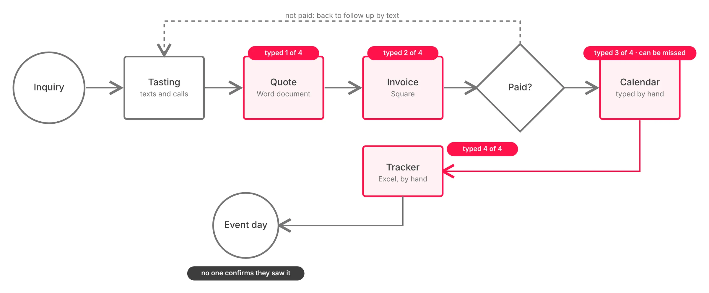
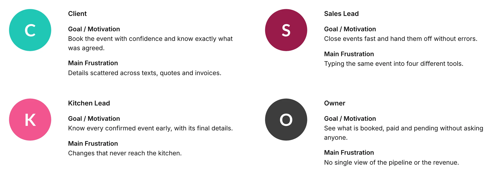
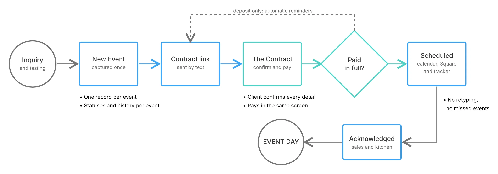
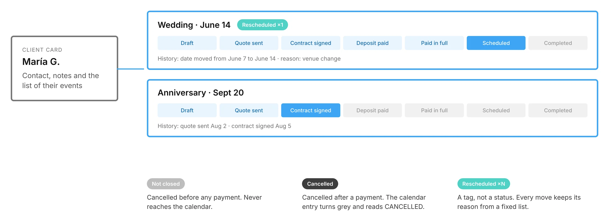
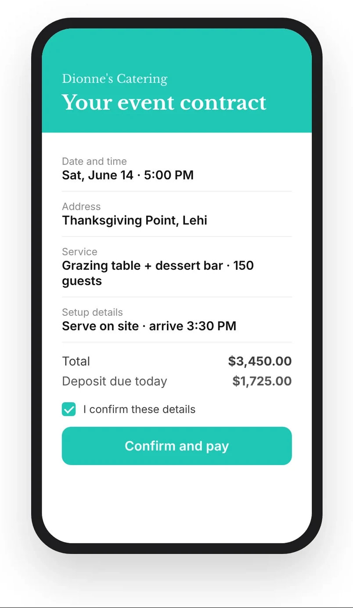
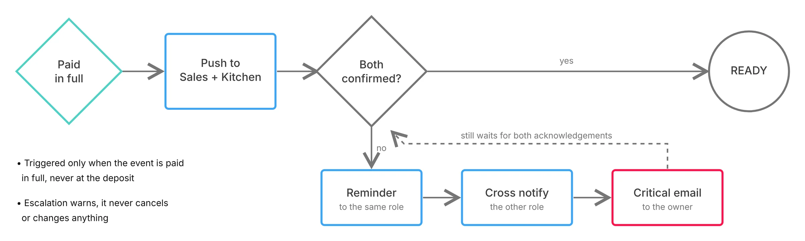
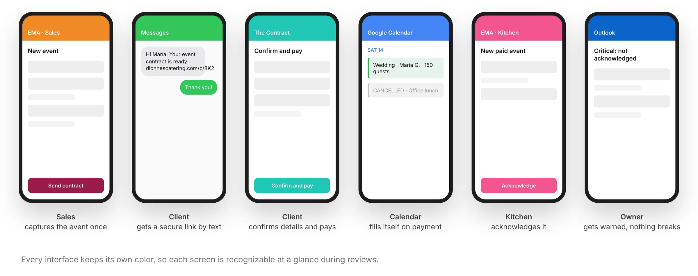
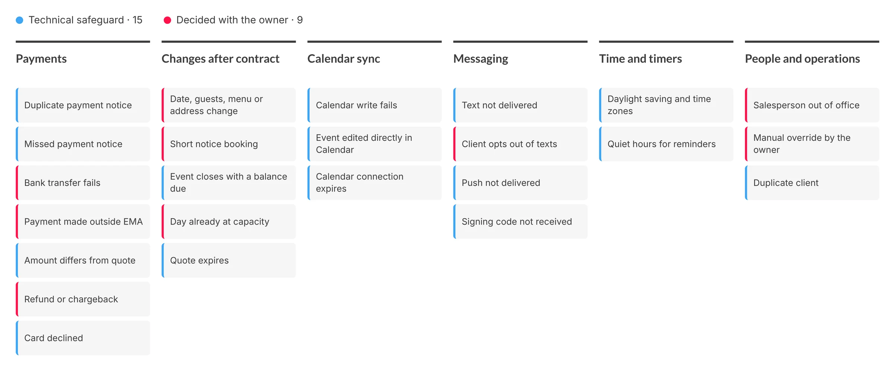

The
Problem
- Three people, four toolsThe client received a Word quote and then paid a Square invoice. Sales typed the same event into Square, the tracker and the calendar. Production read the calendar as its only source of truth.
- Manual, unconfirmed, silentThe same details were typed up to four times. Unpaid events could reach the calendar and paid ones could be missed, and nothing confirmed that production had seen a new or changed event.
- Found on event dayLogistics risk surfaced on the day of the event, when it costs the most.
- With AI: mapping the real workflowI walked Claude through the sales lead's whole process, from the first lead to the calendar entry, and used it to separate each pain point: transcribed tasting notes, manual quotes, installment tracking and the calendar entry production depends on. It also settled feasibility early: Square's own calendar sync only covers appointments, not invoices, so a custom layer was needed. The framing stayed mine: two sources of truth, and any mismatch means chaos on event day.

Research
I mapped every tool an event touched and turned what I heard from the owner, sales and kitchen into four people with one shared frustration: nobody had the whole event in one place.
The constraints shaped everything: a small team working from their phones, no budget for native apps, and payments that must land in the business's own account. The key assumption was that most errors start when details are copied between tools, not when they are first captured.
With AI: testing options, not the business. I used Claude to pressure test how to build it. Zapier's Square support turned out to be polling based, with delays and no reliable invoice triggers, so it was ruled out for the core. When the AI started suggesting changes to the catering process itself, I stopped it: the operation is the owner's expertise, so AI stayed on technical feasibility and the process stayed as the business runs it.

The
Decision
- The event is the backboneThe journey tracked is the event's, not the client's. Each event has its own statuses and change history, and the client card simply holds the list of their events. A reschedule is a tag that keeps its reason, never a new status.
- The contract is the key screenThe client confirms date, time, address, service and setup details in one place and pays on the same screen, straight to the business's own account. It opens from a secure link sent by text, with no account and no app to install.
- Payment schedules, people confirmOnly a confirmed payment writes the event to the calendar, Square and the tracker. Once paid in full, sales and kitchen must both acknowledge it; if they don't, reminders escalate to a critical email to the owner. Escalation warns, it never cancels or changes anything.
- With AI: one decision at a timeI reviewed the flow with Claude screen by screen and closed each open question: history per event instead of per client, reschedules as a tag with a fixed list of reasons, one Cancel button whose result depends on whether anything was paid, and acknowledgement only once an event is paid in full, a correction I made after the first version fired it at the deposit. Claude then turned the agreed flow into a swimlane by actor: client, sales, production and the system, 75 steps across four phases. The model itself evolved along the way: the September version had the client card as its backbone; the final one puts the event at the center.




Iteration
& Testing
Claude built the low fidelity prototype in HTML from my flows, and I reviewed it screen by screen, one role at a time: sales captures the event once, the client gets a secure link by text, confirms and pays, the calendar fills itself on payment, the kitchen acknowledges, and the owner gets warned when something stalls. Every interface keeps its own color, so each screen is recognizable at a glance during reviews.
With AI: iterating in rounds. Each review changed the prototype: color by interface type so texts, email, the tracker and the calendar read instantly; a Personalize button and a Notes field on the new event screen; brand colors per role; and a Full flow mode with role switch screens to present the whole story from client to kitchen in one pass.
Then I had Claude stress test the flow for what could break, and I resolved each case: 24 edge cases across payments, changes after the contract, calendar sync, messaging, timers and operations. 15 are technical safeguards and 9 were decided with the owner.
The finished interface. The approved interface, its interaction patterns and a clickable prototype for each person have their own case study: Dionne's EMA Interaction Design.


Looking
Back
What went well?
One record, everywhereFour disconnected tools replaced by one event record that writes to payments, the calendar and the tracker.
Both teams confirmEvery paid in full event acknowledged by sales and kitchen, so nothing reaches event day unseen.
Every change traceableCancellations and reschedules live in the event's own history, each with its reason.
AI as a partner, not the designerClaude mapped, diagrammed, prototyped and stress tested; I kept the business rules and made every call. Knowing when to stop the AI mattered as much as using it.
The business around it
Room to growRevenue grew from about $150K to $260K+ a year, and the team has capacity for up to 20 events a week.